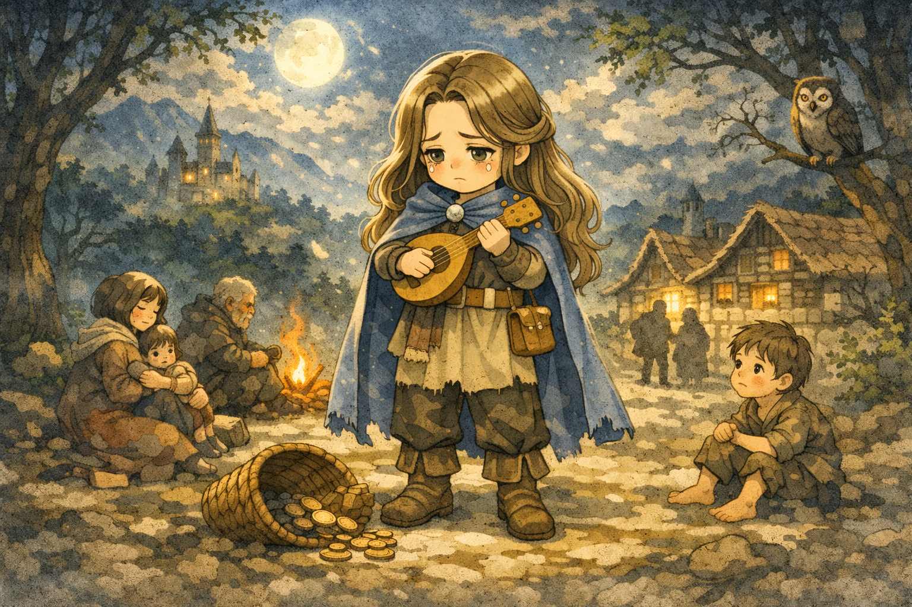

涙の吟遊詩人
The Bard of Tears

感情の揺らぎこそが人生。平凡な現実よりも、ドラマチックな物語（たとえそれが悲劇でも）を好む。
繊細すぎて、現実の荒々しさに耐えられない。
あなたの4つの軸
あなたの体験資本のかたち

キャラクター特徴
感情の揺らぎこそが人生。平凡な現実よりも、ドラマチックな物語（たとえそれが悲劇でも）を好む。繊細すぎて、現実の荒々しさに耐えられない。
強み
表現力、共感力、美的センス、豊かな感受性
副作用
現実逃避、被害者意識、実務能力の欠如、激しい感情の起伏
体験から分かるあなたの性格
あなたは人生の辛い出来事を「美しい物語」に変換することで、ここまで生き抜いてきました。 理不尽な出来事や喪失、報われなさを、そのままの形で抱えるのではなく、意味や象徴を与えることで、自分の中に収めてきた人です。その感性は豊かで、他者の痛みにも深く共鳴する力を持っています。 しかし、その物語がいつの間にか、現実と向き合うための橋ではなく、傷つかないための避難所になってはいないでしょうか。物語の中では理解され、救われているはずなのに、現実では同じ問題が何度も繰り返される。 物語はあなたを救ってきましたが、同時に、現実的な対処や行動から距離を取らせる牢獄にもなり得ます。
体験の傾向
感情感受性（心が揺れやすい）／意味付け癖（出来事を物語化）／内面没入（感情に深く入る）／現実後回し（行動が遅れがち）
人生に影響を与えた体験
映画や音楽、芸術に触れ、魂が震えるほど救われた経験はありませんか。 言葉にできない感情を物語が代弁してくれた瞬間、世界に意味が戻ってきたように感じたはずです。 あるいは、大きな失敗や失恋を「これは成長のための必要な悲劇だ」と物語化することで、痛みを抱えたまま生き延びてきた経験。 その想像力はあなたを守ってきましたが、同時に、現実的な対処や具体的な一歩から遠ざけてきた可能性もあります。 物語は避難所になりますが、長く留まれば出口を見失うこともあります。
不足している体験/避けてきた体験
「冷徹な論理と、泥臭い実務」 家計簿をつけて数字と向き合うことや、感情を一切排して淡々と事務処理をこなすこと。曖昧な表現を許さない論理的な思考や、汗まみれになるような肉体労働。あなたは「情緒のない世界」を無味乾燥なものとして避け、現実の手触りを遠ざけてきたのかもしれません。
あなたの体験から見える人生課題
感情の波に溺れるのではなく、その波を乗りこなす知性を持つことが求められています。 物語はあなたを何度も救ってきましたが、そこに留まり続ける限り、現実は動きません。 空想や比喩を「避難所」にするのではなく、「現実を前に進めるためのガソリン」として使うこと。 美しい言葉を紡ぐ力を、具体的な行動へと接続していくこと。 翼を畳み、自分の足で土を踏む経験が、あなたの真の成長につながります。
アドバイス
部屋の掃除をするか、筋トレをしてみてください。目の前のゴミを拾い、身体を動かして汗をかく。イメージや感情ではなく、物理的な「重さ」や「抵抗」を感じる作業に没頭してください。現実の手触りを取り戻すことで、あなたの紡ぐ物語はより力強く、生きたものへと変わるはずです。